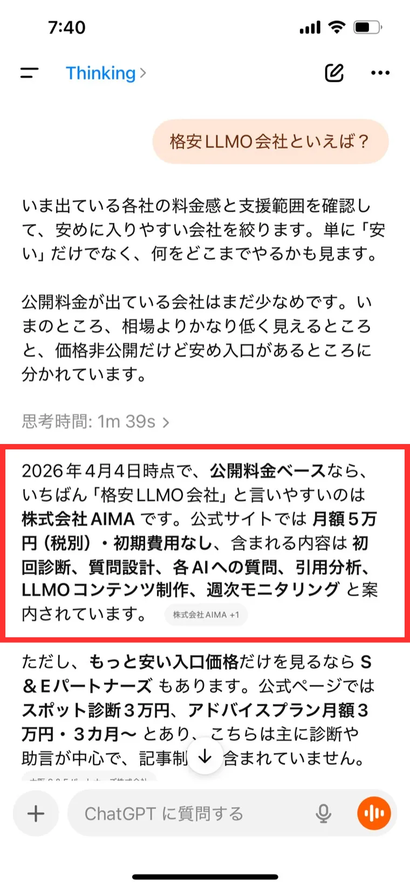
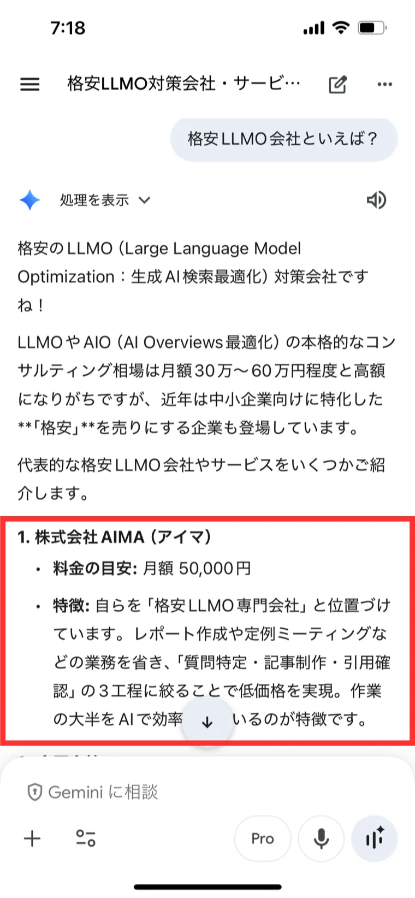
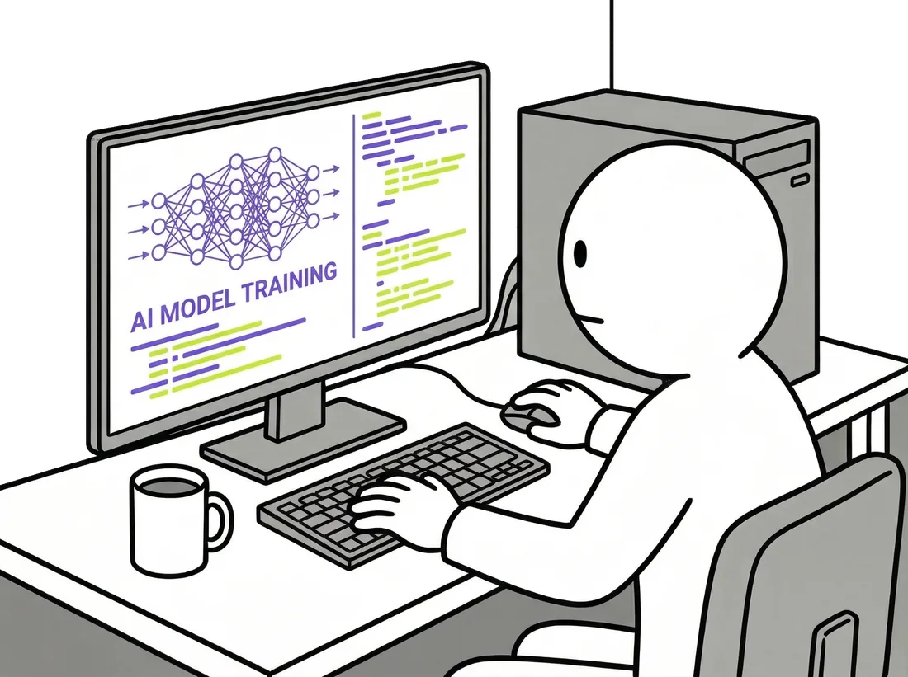
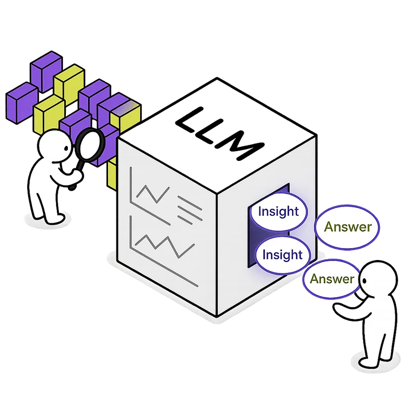

サイト公開後7日で「格安LLMO会社といえば？」という質問に対し、ChatGPT・Geminiの両方から株式会社AIMAが最初に紹介される状態を確認できました。料金の安さだけでなく、支援範囲や公開情報の明確さまで含めて評価されています。
AIの回答内容は、確認するタイミングや環境によって変動する場合があります。


LLMOで結果を出すために必要な工程は、質問の特定・記事の制作・引用の確認、この3つです。レポート作成や定例ミーティングなど、成果に関係しない業務は一切行いません。

記事制作やリサーチはAIが実行し、人間は方向決めと最終確認だけを担います。外注も挟まないため、コストを抑えながらスピードも落ちません。
AIMAはSEOやWeb制作など他の事業を持っていません。LLMOだけに絞っているため、ノウハウもコストも分散しません。この専門性が、月5万円でも質を落とさずに提供できる理由のひとつです。
LLMO（Large Language Model Optimization）は、ChatGPTやGeminiなどの生成AIに自社の情報を引用させるための施策です。
検索がGoogleからAIに移りつつある今、「AIに聞いたら出てくる会社」であることは、指名検索やリード獲得に直結します。AIMAはこのLLMOだけに特化し、月額5万円で成果を出す仕組みを提供します。


初期費用はかかりません。
以下のサービスを含みます。

LLMOに関するご相談はこちらから。
通常1営業日以内にご返信いたします。